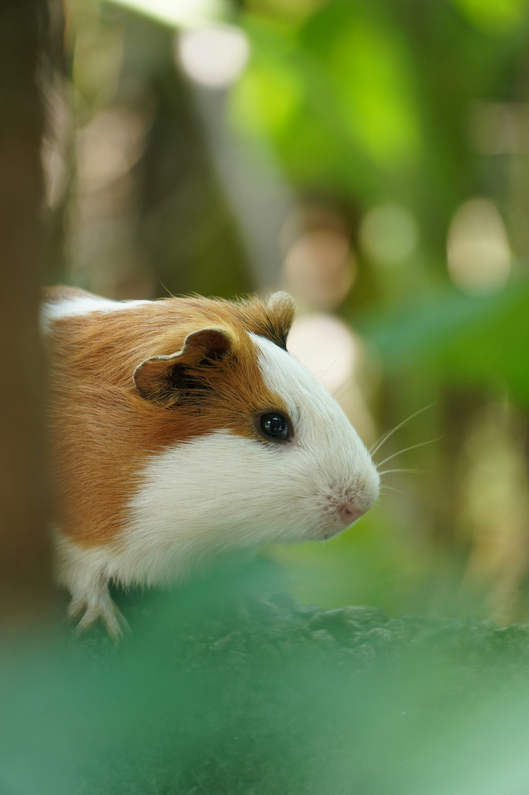
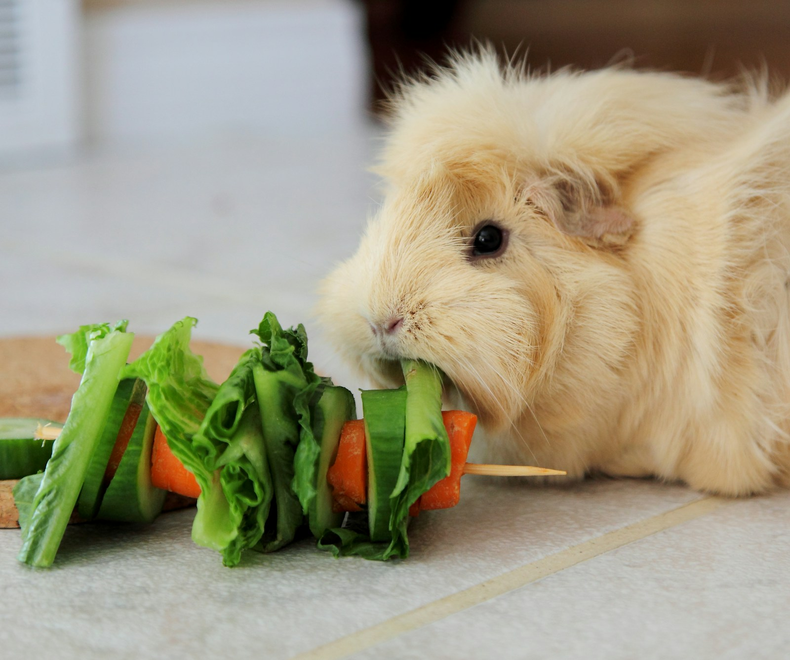
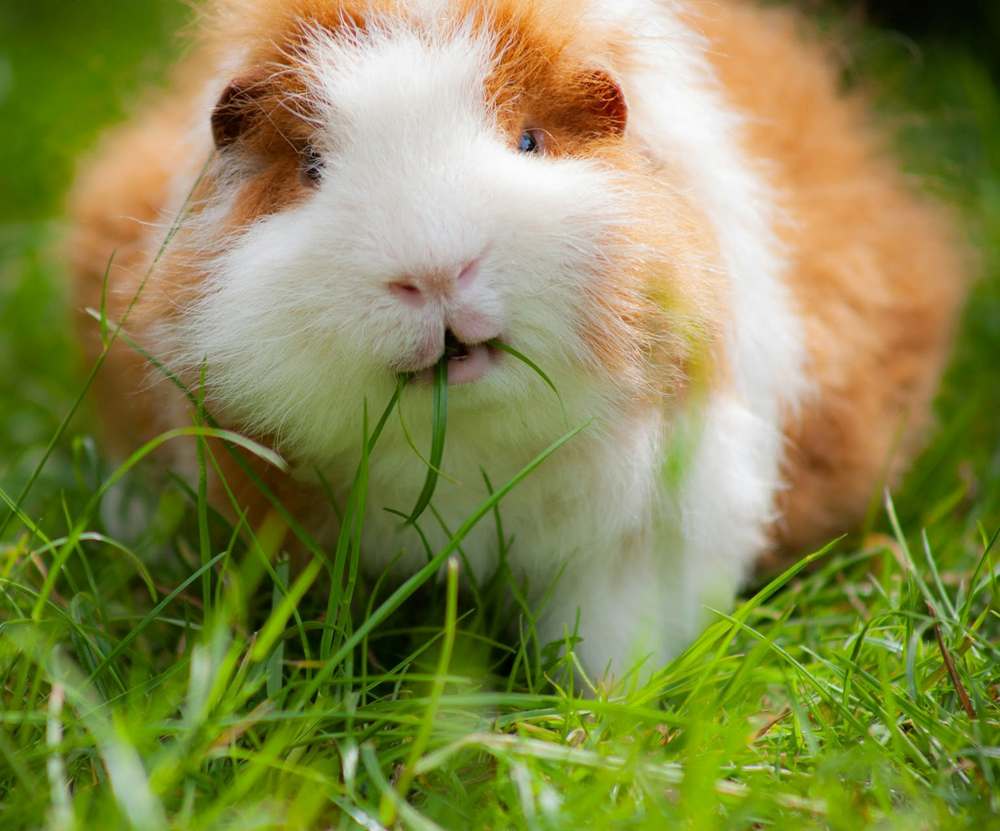
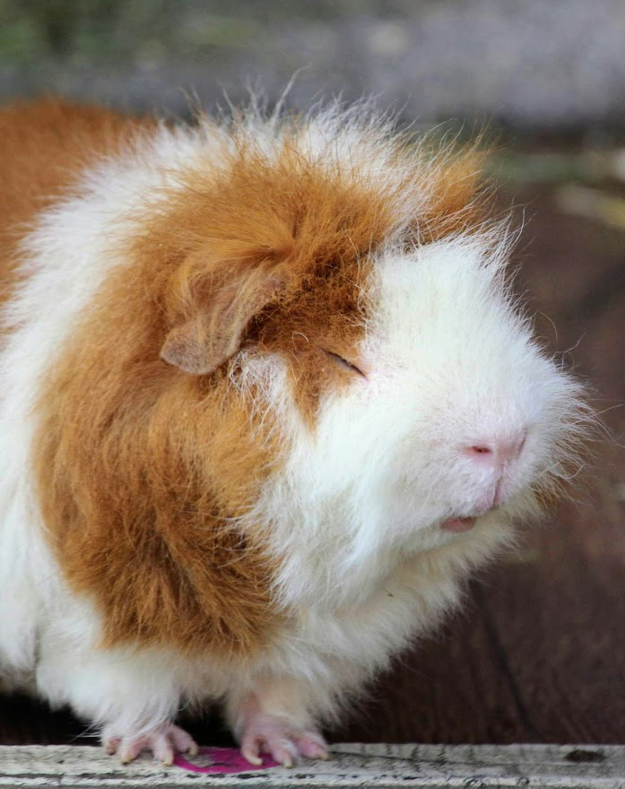

3
cosas que no sabías
de los cobayos

1
Roedores
No producen vitamina C
Igual que nosotros, la tienen que recibir todos los días: con su alimento y con verduras frescas, como el morrón.

2
Roedores
Sus dientes nunca dejan de crecer
Por eso necesitan heno todos los días: masticarlo los desgasta de forma natural.

3
Roedores
Saltan de felicidad
Cuando están contentos dan saltitos en el aire, como un pororó. Por eso se le dice «popcorning».
¿Tenés un cobayo?
Contanos cómo se llama en los comentarios.